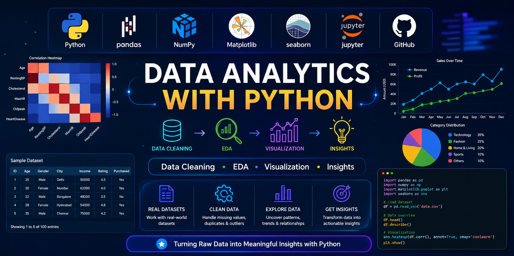

Exploring real-world datasets through Data Cleaning, Exploratory Data Analysis (EDA), Visualization, and Business Insights using Python.

Recently, I worked extensively on Data Analytics projects using Python. My focus was on transforming raw datasets into meaningful insights through data cleaning, exploratory data analysis (EDA), statistical analysis, and data visualization.
Using libraries such as Pandas, NumPy, Matplotlib, and Seaborn, I learned how data can be processed, analyzed, and presented to support decision-making. These projects strengthened my analytical thinking, problem-solving abilities, and understanding of real-world datasets.
Collecting datasets from Kaggle, APIs, CSV files, and public repositories.
Handling missing values, duplicates, outliers, and formatting issues.
Exploring trends, correlations, distributions, and patterns in data.
Creating charts, graphs, heatmaps, and dashboards.
Performed data cleaning, feature analysis, correlation study, and predictive insights on healthcare data.
Analyzed ratings, genres, popularity trends, and visualization using Python libraries.
Explored player performance, team statistics, and match trends through interactive visualizations.
Identified trends, customer behavior, and business insights using exploratory analysis.
All notebooks, datasets, EDA reports, visualizations, and project documentation are available on GitHub.
Data Analytics has helped me understand how raw data can be converted into actionable insights. Through continuous practice, I have gained hands-on experience in cleaning data, visualizing trends, performing exploratory analysis, and communicating findings effectively.